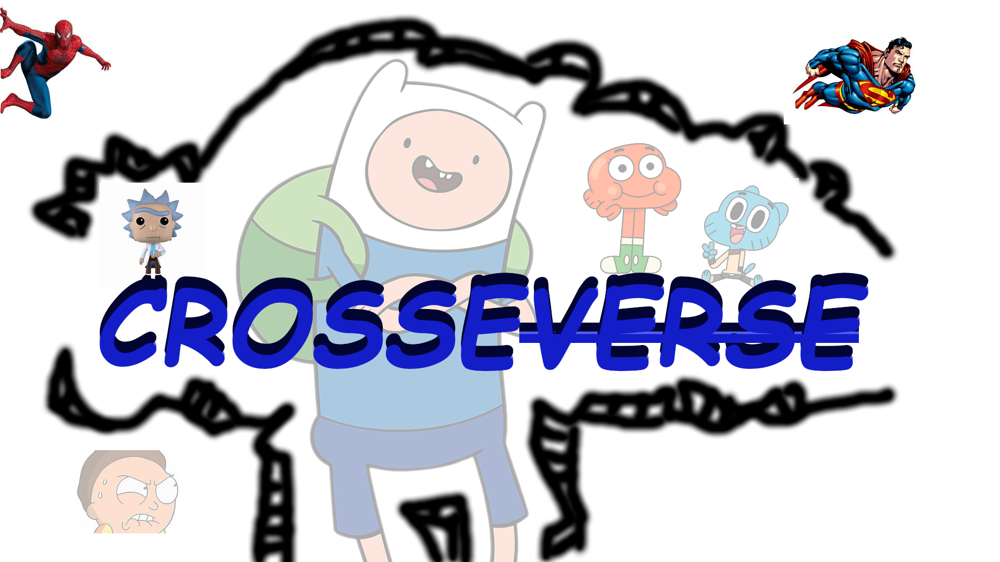
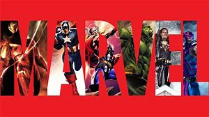
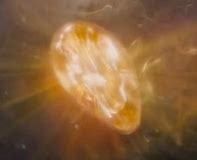
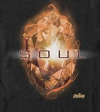
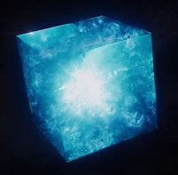
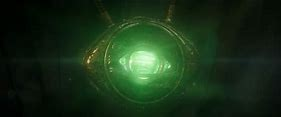

crossoVerSE
.jpg)
marvel
personnages
cyclope
aussi connu sous le nom de Scott summers est un membre et chef des X-mens.Il a la capacité d'envoyer des rafales d'energie avec ses yeux.
- il doit avoir ses lunettes afin de maitriser son pouvoir
- son fils est le célèbre cable
- sa bien aimé est est jean gray alias marvel girl
en savoir plus sur cyclope
Scoot Summers est un mutants, membre des x-men il est aussi le chef de cette puissante équipe.A l'age de 13 Scott perdu ses parents et son frère dans un accident d'avion qui tua sa mere et son père.A l'age de 13 ans ses pouvoirs ont commencé a apparaitre ce qui a attirer l'intention de Charles Xavier qui decida de l'adopter par la suite.Des annés plus tard Scott retrouva son Frère Alex.spider-man
spider-man est un super-héros marvel créer en 1962 par Stall Lee et Steve jeedco.Il a la capacite d'une arreigné.
- il peut soulever jusqu'a 10 tonnes
- il a plusieurs clone de lui
- son sens arreigné lui permet d'anticiper le danger
en savoir plus sur l'homme arreigné
Peter parker est un jeune étudiant orphelin très intelligent et doué en chimie.Durant toute sa vie Peter a été elevée par son oncle Ben et sa tente May qui l'aime plus que tout.Un jour Peter se fait piquer par une arreigné radioactive d'Oscorp qui lui donna des super-pouvoirs.Il a une force surhumaine,une agilité;une vitesse,il a la capacité d'adhérer sur toute type de surface il a aussi un sens arreigné qui permet à notre fidèle serviteur de détécter le danger.iron-man
iron-man est un super-héros evoluant dans l'univers marvel c'est l'un des premiers membre des avengers
- c'est un playboy milliardère
- il a plus de 100 armures
- il peut voler et respirer dans l'espace grace à son armure

thanos
Thanos est l'un des plus grand vilain de marvel aussi connu sous le nom d titans fou, il est le personnage principal de la quete de l'infini
- il vient de la planète titans
- il a un fils du nom de than
- il a suprimer la moitié de la population universelle en claquant des doigts
video
Pierre de l'infini
| nom de la pierre | pocesseur précédant | couleur | pouvoirs | image de la pierre |
| la gemme de l'esprit | Vison | jaune | plonger au plus profond des esprits |  |
| la gemme de l'ame | aucun | orange | voler,manipuler ou modifier les ames |  |
| tesseract | le S.H.I.E.L.D | bleu | téléportation et fusion des objets dans tous l'espace |  | Pierre du temp | Dr.strange | vert | controler le cours du temp |  |
| pierre de la réalité | l'Éther de Svartalfheim | rouge | modifier la réalité | |
| pierre du pouvoir(orbe de morgag) | le collectionneur | violet | rendre indestructible son porteur |